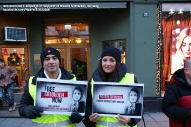

|
|

روزجهانی حقوق بشر در نروژ وابراز نگرانی ایرانیان مقیم نسبت به وضعیت نسرین ستوده و دیگر زندانیان سیاسی
سه شنبه22 آذر 1390
کمپین بین المللی حقوق بشر در ایران: دهها تن از ایرانیان مقیم نروژ روز گذشته در مراسمی به مناسبت روز حقوق بشر در شهر اسلو گرد آمدند و با روشن کردن شمع و در دست کردن شعارهای در اعتراض به وضعیت بحرانی حقوق بشر در ایران خواستار آزادی زندانیان سیاسی و از جمله نسرین ستوده شدند. شرکت کنندگان در این تجمع با در دست گرفتن پلاکاردهایی بار دیگر نگرانی خود را نسبت به وضعیت زندانیان سیاسی و در حالی که در همان روزجایزه صلح نوبل امسال به سه تن از زنان فعال این عرصه در این شهر داده شد اعلام کردند.
تجمع کنندگان که در میان آن شهروندان نروژی هم دیده می شوند با حضور در بیرون از محل اعطای جایزه نوبل صدای خود را به گوش برندگان امسال جایزه رساندند. در بخشی از ویدیو دیده می شود که این سته تن به روی بالکنی محل مراسم آمده و به ابراز احساسات شرکت کنندگان در این تجمع پاسخ می دهند.
کمپین بین المللی حقوق بشر در ایران هفته گذشته با آغاز برنامه ای برای اطلاع رسانی و درخواست برای آزاد نسرین ستوده صفحه ای را فراهم کرده است که می توانید با امضا کردن آن نامه ای را برای حمایت از آزادی وی به شماری از دیپلمات های کشورهای جهان و نیز مقامات جمهوری اسلامی ارسال کنید. طی هفته گذشته صدها نفر این نامه را امضا کرده اند.